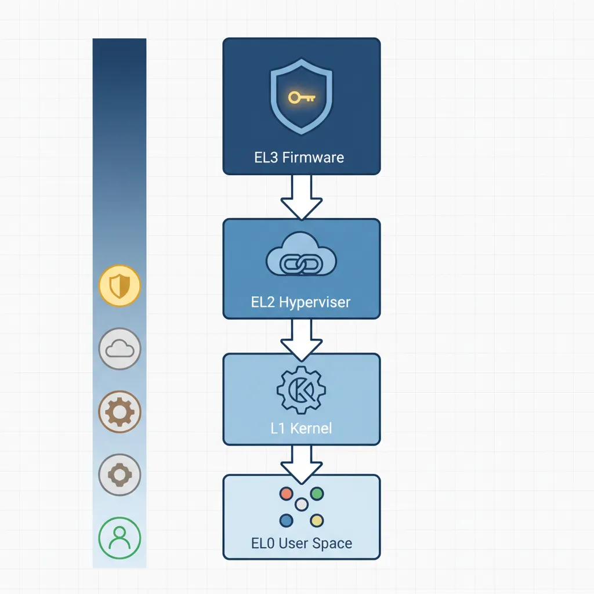
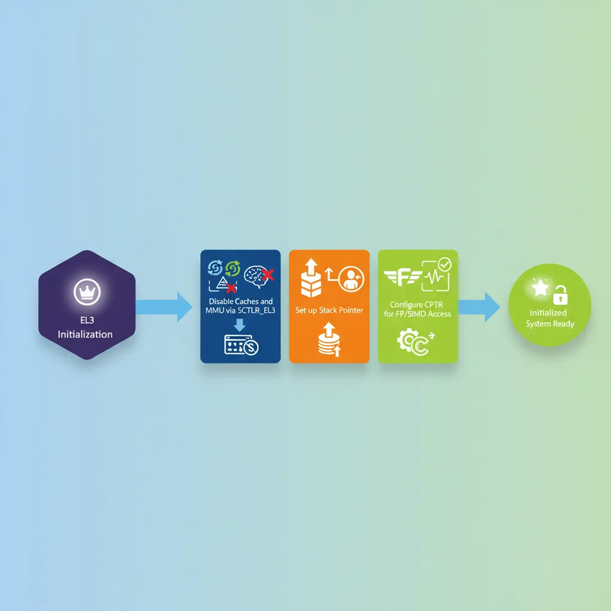
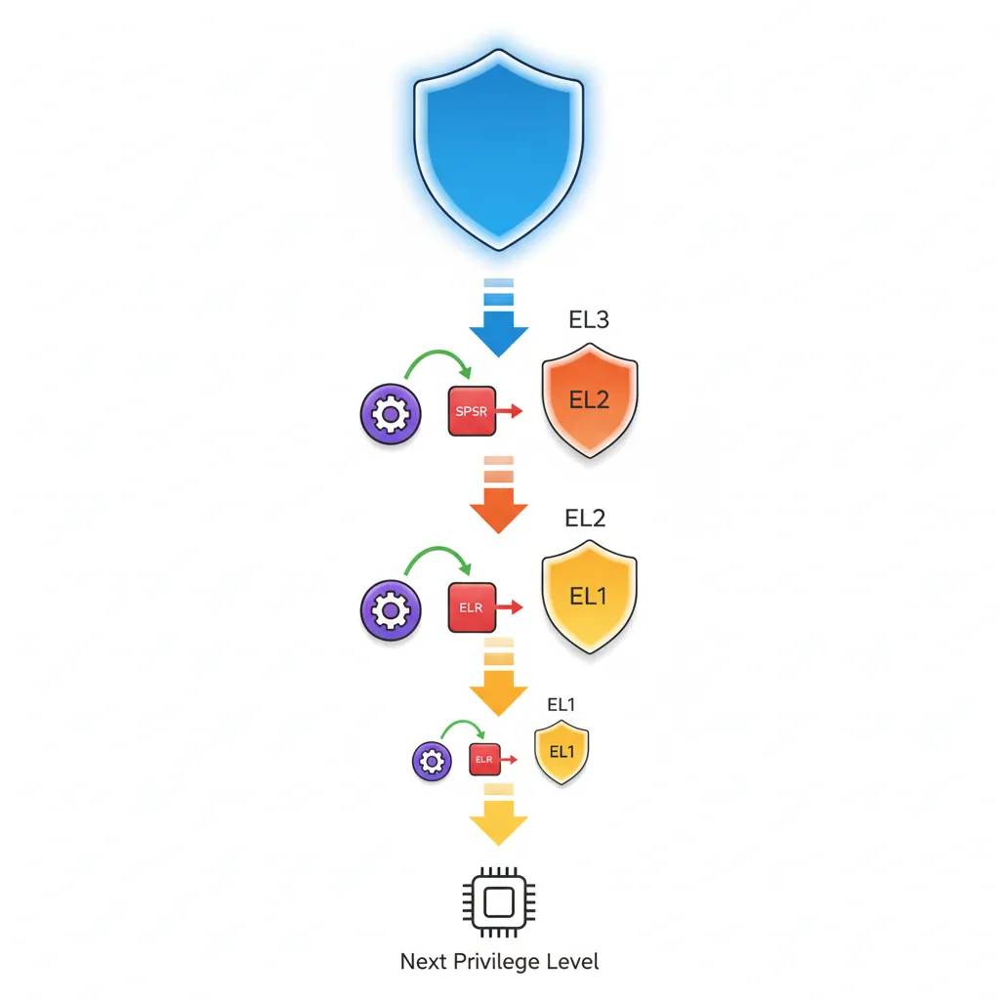
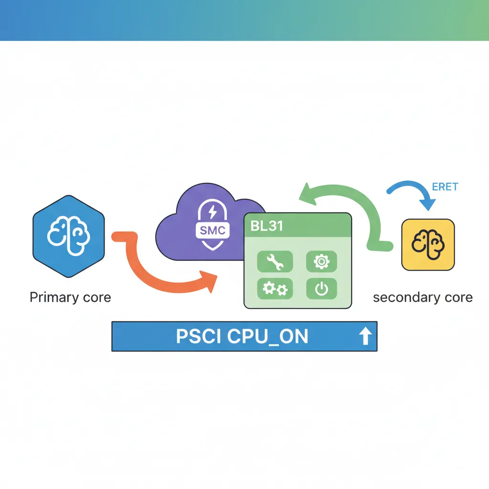

Introduction & Boot Chain Overview
ARM Assembly Mastery
Architecture History & Core Concepts
ARMv1→v9, RISC philosophy, profilesARM32 Instruction Set Fundamentals
ARM vs Thumb, registers, CPSR, barrel shifterAArch64 Registers, Addressing & Data Movement
X/W regs, addressing modes, load/store pairsArithmetic, Logic & Bit Manipulation
ADD/SUB, bitfield extract/insert, CLZBranching, Loops & Conditional Execution
Branch types, link register, jump tablesStack, Subroutines & AAPCS
Calling conventions, prologue/epilogueMemory Model, Caches & Barriers
Weak ordering, DMB/DSB/ISB, TLBNEON & Advanced SIMD
Vector ops, intrinsics, media processingSVE & SVE2 Scalable Vector Extensions
Predicate regs, gather/scatter, HPC/MLFloating-Point & VFP Instructions
IEEE-754, scalar FP, rounding modesException Levels, Interrupts & Vector Tables
EL0–EL3, GIC, fault debuggingMMU, Page Tables & Virtual Memory
Stage-1 translation, permissions, huge pagesTrustZone & ARM Security Extensions
Secure monitor, world switching, TF-ACortex-M Assembly & Bare-Metal Embedded
NVIC, SysTick, linker scripts, low-powerCortex-A System Programming & Boot
EL3→EL1 transitions, MMU setup, PSCIApple Silicon & macOS ABI
ARM64e PAC, Mach-O, dyld, perf countersInline Assembly, GCC/Clang & C Interop
Constraints, clobbers, compiler interactionPerformance Profiling & Micro-Optimization
Pipeline hazards, PMU, benchmarkingReverse Engineering & ARM Binary Analysis
ELF, disassembly, CFR, iOS/Android quirksBuilding a Bare-Metal OS Kernel
Bootloader, UART, scheduler, context switchARM Microarchitecture Deep Dive
OOO pipelines, reorder buffers, branch predictVirtualization Extensions
EL2 hypervisor, stage-2 translation, KVMDebugging & Tooling Ecosystem
GDB, OpenOCD/JTAG, ETM/ITM, QEMULinkers, Loaders & Binary Format Internals
ELF deep dive, relocations, PIC, crt0Cross-Compilation & Build Systems
GCC/Clang toolchains, CMake, firmware genARM in Real Systems
Android, FreeRTOS/Zephyr, U-Boot, TF-ASecurity Research & Exploitation
ASLR, PAC attacks, ROP/JOP, kernel exploitEmerging ARMv9 & Future Directions
MTE, SME, confidential compute, AI accelOn power-on, Cortex-A hardware resets to AArch64 EL3 Secure state. The boot chain proceeds through privilege rings: EL3 (Secure firmware/TF-A BL31) → EL2 (hypervisor or disabled) → EL1 (OS kernel) → EL0 (user space). Each ERET drops privilege while configuring the execution state (SPSel, register width) for the next level. Understanding this chain is essential for writing secure firmware, debugging early boot failures, or porting new platforms.

EL3 Initialisation
CPU Reset Registers
On AArch64 reset, several registers have UNKNOWN or implementation-defined values. Firmware must initialise cache-related CPU registers, disable data caches and MMU (so early code doesn't fault), and set up the stack pointer before calling C. Key CPUECTLR_EL1 and L2CTLR_EL1 are implementation-defined (Cortex-A57/A72/A78 examples).

// Early EL3 init — CPU comes out of reset here
// SP_EL3 not yet valid; code must be PC-relative until stack set
.section ".text.boot"
.global el3_reset_entry
el3_reset_entry:
// 1. Disable D/I caches and MMU via SCTLR_EL3
MRS x0, SCTLR_EL3
BIC x0, x0, #(1 << 0) // M=0: disable MMU
BIC x0, x0, #(1 << 2) // C=0: disable D-cache
BIC x0, x0, #(1 << 12) // I=0: disable I-cache
MSR SCTLR_EL3, x0
ISB
// 2. Set EL3 stack
LDR x0, =__el3_stack_top
MOV sp, x0
// 3. Enable FP/SIMD at all EL (CPTR_EL3 TFP=0)
MSR CPTR_EL3, xzr // Allow FP at all levels
// 4. Configure CPU extended control (Cortex-A72 example)
// MRS x0, S3_1_C15_C2_1 // CPUECTLR_EL1
// ORR x0, x0, #(1 << 6) // Enable hardware prefetch
// MSR S3_1_C15_C2_1, x0
ISB
B bl31_main // Jump to TF-A BL31 C runtimeSCR_EL3 & HCR_EL2 Configuration
// Configure SCR_EL3 for NS world handoff
// SCR_EL3 controls: NS bit, IRQ/FIQ routing, SMC enable, RW (register width for EL2)
MRS x0, SCR_EL3
ORR x0, x0, #(1 << 0) // NS=1: next EL runs in Non-Secure state
ORR x0, x0, #(1 << 1) // IRQ=1: IRQs taken to EL3 (optional: route to EL1)
ORR x0, x0, #(1 << 3) // SMD=0 kept; ensure SMC not disabled
ORR x0, x0, #(1 << 8) // HCE=1: HVC instruction enabled
ORR x0, x0, #(1 << 10) // RW=1: EL2 and below run AArch64 (not AArch32)
MSR SCR_EL3, x0
ISB
// Configure HCR_EL2 — if EL2 is present, set RW for EL1
MRS x0, HCR_EL2
ORR x0, x0, #(1 << 31) // RW=1: EL1 runs AArch64
MSR HCR_EL2, x0
ISBTF-A BL1 → BL2 → BL31/BL32/BL33
BL1 ROM Code
BL1 executes from ROM. It initialises the EL3 execution environment, validates and copies BL2 to trusted SRAM, then ERET to BL2. BL2 loads BL31 (resident secure monitor), optionally BL32 (OP-TEE), and BL33 (U-Boot/UEFI). BL31 installs the SMC dispatcher, then ERET to BL33 at EL1.
flowchart TD
RESET["Reset Vector\n(EL3)"] --> BL1["BL1: AP Trusted ROM\nPlatform init, auth BL2"]
BL1 --> BL2["BL2: Trusted Boot Firmware\nLoad BL31, BL32, BL33"]
BL2 --> BL31["BL31: EL3 Runtime\n(Secure Monitor)"]
BL2 --> BL32["BL32: Secure OS\n(OP-TEE / TrustZone)"]
BL2 --> BL33["BL33: Non-Secure\n(U-Boot / UEFI)"]
BL31 --> KERNEL["Linux Kernel\n(EL1)"]
BL32 -.-> BL31
BL33 --> KERNEL
// BL1 stub: copy BL2 from Flash/eMMC to secure SRAM then jump
.global bl1_main
bl1_main:
LDR x0, =BL2_SRC_ADDR // BL2 in non-volatile storage
LDR x1, =BL2_DST_ADDR // Secure SRAM destination
LDR x2, =BL2_SIZE
BL memcpy_el3 // Simple EL3 memcpy
// Optional: hash verification (SHA-256 over BL2 image + CoT check)
// BL bl1_verify_bl2
// ERET to BL2 at EL3
LDR x0, =BL2_DST_ADDR
MSR ELR_EL3, x0 // Return address = BL2 entry
MRS x1, SPSR_EL3
BIC x1, x1, #0xF // EL = EL3 (bits[3:2]=11) — stay at EL3 for BL2
ORR x1, x1, #0xD // M[3:0]=1101 = EL3h (SP_EL3)
MSR SPSR_EL3, x1
ERET // Jump to BL2BL31 Resident Monitor
// BL31 passes execution to BL33 (U-Boot) at EL1 NS
.global bl31_exit_to_ns
bl31_exit_to_ns:
// Load BL33 (U-Boot) entry point and context
LDR x0, =UBOOT_ENTRY_ADDR
MSR ELR_EL3, x0
// Build SPSR_EL3: target = EL1h (EL1 with SP_EL1), NS=1 already in SCR
MOV x1, #0b00101 // M[4:0] = EL1h
ORR x1, x1, #(0b1111 << 6) // DAIF all masked initially
MSR SPSR_EL3, x1
// x0–x3 per BL33 calling convention: 0=FDT addr, 1–3=0
LDR x0, =FDT_BASE_ADDR // Pass device tree to bootloader
MOV x1, xzr
MOV x2, xzr
MOV x3, xzr
ERET // Jump to U-Boot EL1EL3 → EL2 → EL1 ERET Chain

graph TD
EL3["EL3: Secure Monitor\n(Highest Privilege)"]
EL2["EL2: Hypervisor"]
EL1["EL1: OS Kernel"]
EL0["EL0: User Application"]
EL3 -->|"ERET\nSPSR_EL3 → EL2"| EL2
EL2 -->|"ERET\nSPSR_EL2 → EL1"| EL1
EL1 -->|"ERET\nSPSR_EL1 → EL0"| EL0
EL0 -.->|"SVC\n(System Call)"| EL1
EL1 -.->|"HVC\n(Hypervisor Call)"| EL2
EL2 -.->|"SMC\n(Secure Monitor Call)"| EL3
// Full three-level ERET descent (EL3→EL2→EL1)
// Useful when enabling hypervisor before OS
// === EL3 → EL2 ===
drop_to_el2:
ADR x0, el2_entry // EL2 entry point
MSR ELR_EL3, x0
MOV x0, #0b01001 // SPSR EL2h, DAIF unmasked
MSR SPSR_EL3, x0
ERET
.balign 4
el2_entry:
// Configure EL2 regs, then drop to EL1
MRS x0, HCR_EL2
ORR x0, x0, #(1 << 31) // E2H=0, RW=1 (EL1 AArch64)
ORR x0, x0, #(1 << 27) // TGE=0 (traps to EL1, not EL2)
MSR HCR_EL2, x0
ISB
// === EL2 → EL1 ===
drop_to_el1:
ADR x0, el1_entry
MSR ELR_EL2, x0
MOV x0, #0b00101 // SPSR EL1h
MSR SPSR_EL2, x0
ERET
.balign 4
el1_entry:
// We are now at EL1 — set up kernel environment
LDR sp, =__kernel_stack_top
BL kernel_mainEnabling the MMU at EL1
// Enable identity-mapped MMU at EL1 for early kernel
// Assumes page tables already populated (Part 12 pattern)
enable_mmu_el1:
LDR x0, =ttb0_l1_base // TTBR0_EL1: user/low address space table
MSR TTBR0_EL1, x0
LDR x0, =ttb1_l1_base // TTBR1_EL1: kernel/high address space table
MSR TTBR1_EL1, x0
// TCR_EL1: 48-bit VA, 4K granule, Inner/Outer WB-WA cacheable
LDR x0, =0x00000001B5193516 // T0SZ=16, T1SZ=16, TG0=4K, TG1=4K, IPS=40bit
MSR TCR_EL1, x0
// MAIR_EL1: attr0=Device-nGnRnE, attr1=Normal WB-WA
LDR x0, =0xFF44
MSR MAIR_EL1, x0
ISB
DSB ISH // Ensure page table writes visible
TLBI VMALLE1 // Invalidate all EL1 TLBs
DSB ISH
ISB
MRS x0, SCTLR_EL1
ORR x0, x0, #(1 << 0) // M=1: enable MMU
ORR x0, x0, #(1 << 2) // C=1: enable D-cache
ORR x0, x0, #(1 << 12) // I=1: enable I-cache
MSR SCTLR_EL1, x0
ISB // Fetch subsequent instructions with MMU onPSCI — Power State Coordination Interface
CPU_ON (SMP Bringup)

// PSCI CPU_ON: bring secondary CPU online from Linux kernel (EL1)
// Calling convention: SMCCC (function ID in x0, args in x1-x3)
// CPU_ON function ID: 0xC4000003 (64-bit PSCI)
.global psci_cpu_on
psci_cpu_on:
// x0 = PSCI function ID (CPU_ON = 0xC4000003)
// x1 = MPIDR of target CPU (e.g., 0x80000001 for CPU1)
// x2 = entry_point_address (secondary CPU starts here)
// x3 = context_id (arbitrary value passed to secondary entry)
LDR x0, =0xC4000003 // PSCI64 CPU_ON
LDR x1, =0x0000000100 // CPU1 MPIDR
LDR x2, =secondary_entry // Entry point for secondary
MOV x3, #0 // context_id
SMC #0 // SMC to BL31 PSCI handler
// x0 returns PSCI_SUCCESS (0) or error code
RET
// Secondary CPU entry point (landed here by PSCI handler via ERET)
.global secondary_entry
secondary_entry:
LDR sp, =secondary_stack_top
MSR TTBR0_EL1, x8 // Set page tables (passed via x8 by convention)
BL enable_mmu_el1
BL secondary_mainFDT / ATags Handoff to Linux
// Linux AArch64 kernel entry: arch/arm64/kernel/head.S primary_entry
// Calling convention from bootloader:
// x0 = Physical address of device tree blob (DTB/FDT), or 0
// x1–x3 = 0 (reserved)
// Kernel is called at its load address (2 MB aligned)
// Bootloader must have MMU off, caches off, IRQs and FIQs disabled
launch_linux:
// Disable caches and MMU
MRS x0, SCTLR_EL1
BIC x0, x0, #(1 << 0) // M=0: MMU off
BIC x0, x0, #(1 << 2) // C=0: D-cache off
BIC x0, x0, #(1 << 12) // I=0: I-cache off
MSR SCTLR_EL1, x0
ISB
// Invalidate TLBs
TLBI VMALLE1
DSB SY
ISB
// Pass FDT address (32-bit phys aligned) in x0
LDR x0, =FDT_PHYS_ADDR
MOV x1, xzr
MOV x2, xzr
MOV x3, xzr
// Branch to kernel (no link — no return)
LDR x4, =KERNEL_ENTRY_PHYS
BR x4Evolution of ARM Boot: From Single-Stage to Chain of Trust
Early ARM systems (ARM7TDMI era, 1990s) had trivial boot: ROM at address 0x00000000 jumped directly to application code — no privilege levels, no EL transitions, no firmware chain. The ARMv6 Cortex-A8 introduced the two-stage boot (ROM → bootloader → OS), and ARMv7-A added TrustZone, creating the three-world model. ARMv8-A formalised the four exception levels (EL0–EL3) and the Arm Trusted Firmware (now TF-A) project in 2013 established the BL1→BL2→BL31→BL33 reference chain used universally today.
The Raspberry Pi boot chain is uniquely different: the Broadcom VideoCore IV GPU (not the ARM CPU!) is the primary boot processor. The GPU loads bootcode.bin from the SD card, which loads start.elf (the GPU firmware). Only then does start.elf release the ARM cores from reset, passing the FDT address and kernel image address. This GPU-first design means the ARM CPU never executes EL3 firmware ROM on Raspberry Pi — TF-A runs only when explicitly enabled (Pi 4 onward).
Case Study: AWS Graviton Boot Chain — From Nitro to Linux in 1.2 Seconds
Amazon's Graviton3 (Neoverse V1, 64 cores) boots through a hardened TF-A chain: the Nitro Security Chip acts as BL1, verifying a chain of trust rooted in one-time-programmable (OTP) eFuses. BL2 loads from SPI NOR flash, performs DRAM training (calibrating DDR5 timing parameters) — the single longest boot phase at ~400 ms. BL31 installs PSCI handlers for 64-core SMP bring-up, then ERET to BL33 (a minimal UEFI firmware). The UEFI stub passes ACPI tables (not FDT, unlike embedded Linux) to the kernel via the EFI system table.
Engineering insight: To achieve sub-2-second boot-to-shell, AWS parallelized DRAM training across all memory controllers and eliminated the U-Boot stage entirely — UEFI directly loads the Linux kernel. PSCI CPU_ON brings secondary cores online asynchronously: the primary core starts scheduling before all 63 secondaries have completed their MMU enable and TLB invalidation. This pipelining reduced total boot time from 8 seconds (sequential) to 1.2 seconds.
Hands-On Exercises
Exercise: EL3 → EL1 Minimal Boot Stub
Write a complete AArch64 boot stub that starts at EL3 and drops to EL1. Your code must: (1) disable MMU and caches via SCTLR_EL3, (2) set SP_EL3, (3) configure SCR_EL3 (NS=1, RW=1, HCE=1), (4) configure HCR_EL2 (RW=1), (5) set ELR_EL3 to your EL1 entry point, (6) set SPSR_EL3 for EL1h mode with DAIF masked, (7) ERET. At the EL1 entry point, read CurrentEL and print the value (2 = EL1) to confirm the transition succeeded. Test on QEMU virt machine: qemu-system-aarch64 -M virt -cpu cortex-a72 -nographic -kernel boot.elf.
Exercise: Identity-Map MMU Enable at EL1
Extend your EL1 boot stub to enable the MMU with an identity map. Create a Level 1 page table with 1 GB block descriptors: map the first 1 GB (0x00000000–0x3FFFFFFF) as Device-nGnRnE (for UART MMIO), and the second 1 GB (0x40000000–0x7FFFFFFF) as Normal cacheable (for DRAM). Configure MAIR_EL1, TCR_EL1 (T0SZ=25 for 39-bit VA, 4 KB granule), TTBR0_EL1, then enable with the mandatory DSB → TLBI → DSB → ISB → MSR SCTLR_EL1 → ISB sequence. Write a character to QEMU's PL011 UART (0x09000000) after MMU enable to prove the Device mapping works.
Exercise: PSCI CPU_ON Secondary Core Bringup
On QEMU virt with -smp 4, bring all four cores online using PSCI. The primary core (MPIDR=0) executes your boot stub at EL3 and issues SMC calls for PSCI CPU_ON (function ID 0xC4000003) targeting cores 1, 2, and 3. Each secondary core should: (1) read its MPIDR_EL1, (2) write a unique byte (core ID) to a shared memory location, (3) WFE in a holding pen. After all secondaries are online, the primary core reads the shared memory array and prints all four core IDs via UART. This exercises the full SMP bringup path used by Linux arch/arm64/kernel/smp.c.
Boot Sequence Planner
ARM Boot Sequence Planner
Document your platform's boot chain from power-on to OS entry. Download as Word, Excel, or PDF.
All data stays in your browser — nothing is uploaded.
Conclusion & Next Steps
We traced the complete Cortex-A boot chain in assembly: EL3 hardware init with cache disable, SCR_EL3/HCR_EL2 configuration for Non-Secure AArch64 execution, the TF-A BL1→BL2→BL31 firmware loading chain, EL3→EL2→EL1 ERET descent with SPSR programming, identity-mapped MMU enable with the mandatory DSB/TLBI/ISB sequence, PSCI CPU_ON for SMP bringup of secondary cores, and the Linux AArch64 kernel entry convention (x0=FDT, caches off, MMU off). Along the way, we examined how real platforms (Raspberry Pi, AWS Graviton) implement these stages and how the boot chain evolved from simple ROM jumps to today's Chain of Trust model.